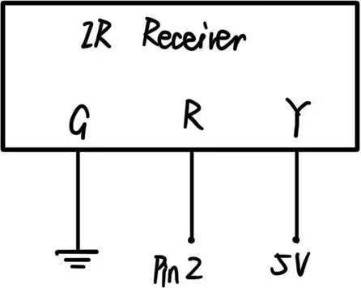
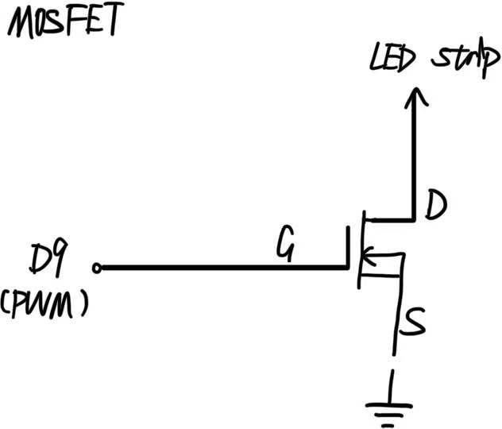
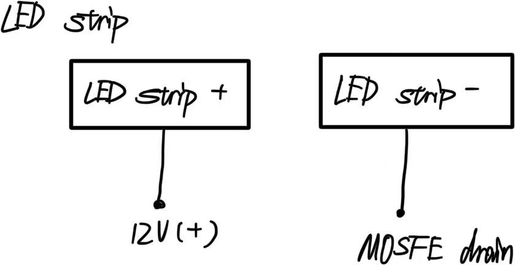
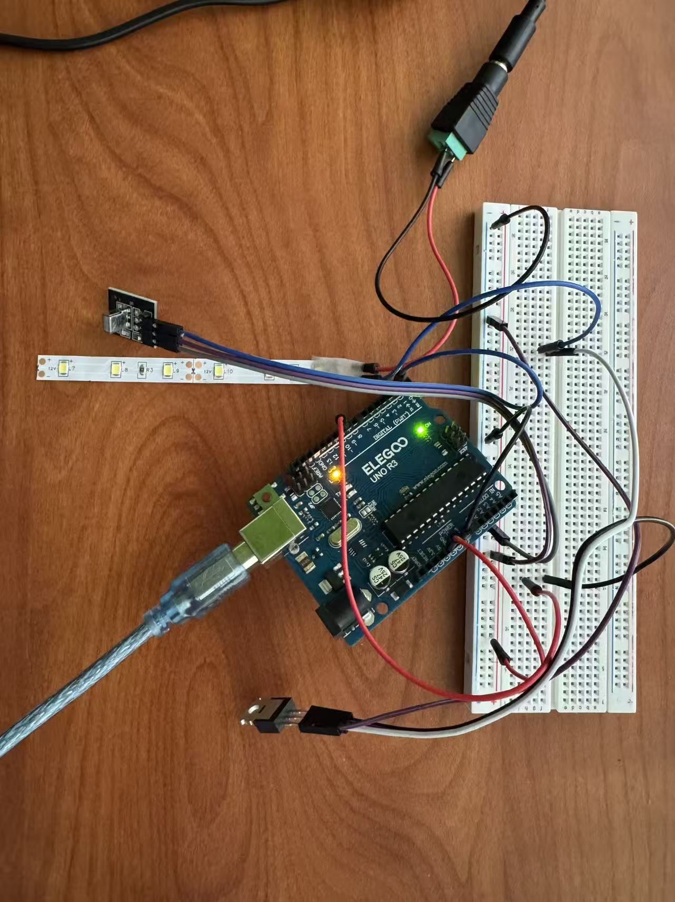
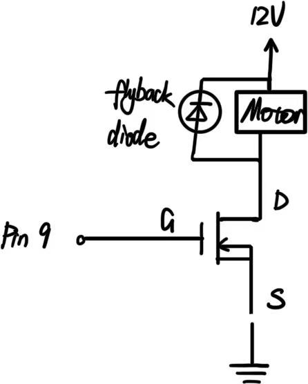
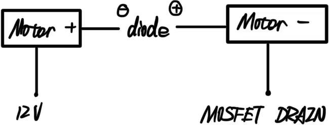
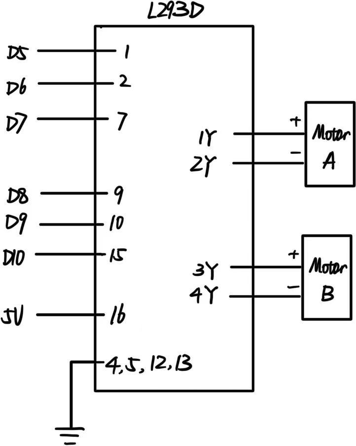

Resistance Calculation

The calculations shows that the LED strip will deprive more than 12V of voltage, so there's no need for additional resistance to protect the MOSFET.
I created an interactive circuit where the infra-red remote controller adjusted the brightness of the LED strip. It uses a transistor to control load power separate from logic power.



The calculations shows that the LED strip will deprive more than 12V of voltage, so there's no need for additional resistance to protect the MOSFET.
I am using an IRLZ44N N-channel MOSFET, which has a maximum continuous drain current of 47A according to its datasheet.
My LED strip section contains 5 LEDs cut from a 5-meter strip rated at 12V/1.5A.
The full strip contains 150 LEDs, drawing 1.5A total.
This means each LED draws 10mA.
My 5-LED section therefore draws:
Load current = 5 LEDs × 10mA = 50mA = 0.05A
The actual load (0.05A) is way smaller than MOSFET's maximum rating (47A),
providing a very safety circuit.

The circuit includes a high-load output device, and the remote as an input, IR receiver as the sensor that uses a library.
// Include the IR remote library
// the following code includes the library name of IRremote.hpp,
// which somehow doesn't show correctly
#include
// Define the pin to receive the IR signal
const int irPin = 2;
// Define the pin to control the MOSFET gate (G)
const int mosfetPin = 9;
// Set up current brightness value (0–255 for PWM)
int brightness = 128;
// Define button HEX codes
// button 5
unsigned long BRIGHT_UP = 0xE31CFF00;
// button 8
unsigned long BRIGHT_DOWN = 0xAD52FF00;
void setup() {
// Start serial communication
Serial.begin(115200);
// Set IR receiver pin as an input
pinMode(irPin, INPUT);
// Set MOSFET control pin (G) as an output
pinMode(mosfetPin, OUTPUT);
// Apply initial brightness to LED strip
analogWrite(mosfetPin, brightness);
// Start the IR receiver hardware
IrReceiver.begin(irPin, ENABLE_LED_FEEDBACK);
// Print startup message
Serial.println("IR brightness control starts");
}
void loop() {
// Check if a remote signal has been received
if (IrReceiver.decode()) {
// Print the received IR code in hexadecimal
Serial.print("IR code: ");
Serial.println(IrReceiver.decodedIRData.decodedRawData, HEX);
// If this button code matches the "increase brightness" button
if (IrReceiver.decodedIRData.decodedRawData == BRIGHT_UP) {
// Increase brightness
brightness += 20;
}
// If this button code matches the "decrease brightness" button
if (IrReceiver.decodedIRData.decodedRawData == BRIGHT_DOWN) {
// Decrease brightness
brightness -= 20;
}
// Prevent brightness from going outside valid PWM range
brightness = constrain(brightness, 0, 255);
// Apply the updated brightness to the MOSFET
analogWrite(mosfetPin, brightness);
// Print the new brightness value
Serial.print("Brightness: ");
Serial.println(brightness);
// Prepare receiver for the next signal
IrReceiver.resume();
}
}

This gif demonstrates the completed circuit. When button 8 is pressed on the remote controller, the LED strip gradually dims. When button 5 is pressed, the LED strip brightens back up.
I have the IRLZ44N n-mosfet transistor. Pin 2 and 3 are the Drain and Source. According to the datasheet, the absolute maximum amount of current will be around 200 A.



// Motor A control pins
// Pin 1 on L293D
const int ENABLE_A = 5;
// Pin 2 on L293D
const int INPUT_1 = 6;
// Pin 7 on L293D
const int INPUT_2 = 7;
// Motor B control pins
// Pin 9 on L293D
const int ENABLE_B = 8;
// Pin 10 on L293D
const int INPUT_3 = 9;
// Pin 15 on L293D
const int INPUT_4 = 10;
void setup() {
// Set all motor control pins as outputs
pinMode(ENABLE_A, OUTPUT);
pinMode(INPUT_1, OUTPUT);
pinMode(INPUT_2, OUTPUT);
pinMode(ENABLE_B, OUTPUT);
pinMode(INPUT_3, OUTPUT);
pinMode(INPUT_4, OUTPUT);
// Enable both motors (HIGH = enabled)
digitalWrite(ENABLE_A, HIGH);
digitalWrite(ENABLE_B, HIGH);
}
void loop() {
// 1. Both motors forward
bothForward();
delay(2000);
stopBoth();
delay(1000);
// 2. Both motors backward
bothBackward();
delay(2000);
stopBoth();
delay(1000);
// 3. Motor A forward, Motor B backward
motorAForward();
motorBBackward();
delay(2000);
stopBoth();
delay(1000);
// 4. Motor A backward, Motor B forward
motorABackward();
motorBForward();
delay(2000);
stopBoth();
delay(1000);
}
// Motor A control functions
void motorAForward() {
digitalWrite(INPUT_1, HIGH);
digitalWrite(INPUT_2, LOW);
}
void motorABackward() {
digitalWrite(INPUT_1, LOW);
digitalWrite(INPUT_2, HIGH);
}
void motorAStop() {
digitalWrite(INPUT_1, LOW);
digitalWrite(INPUT_2, LOW);
}
// Motor B control functions
void motorBForward() {
digitalWrite(INPUT_3, HIGH);
digitalWrite(INPUT_4, LOW);
}
void motorBBackward() {
digitalWrite(INPUT_3, LOW);
digitalWrite(INPUT_4, HIGH);
}
void motorBStop() {
digitalWrite(INPUT_3, LOW);
digitalWrite(INPUT_4, LOW);
}
// Combined movement functions
void bothForward() {
motorAForward();
motorBForward();
}
void bothBackward() {
motorABackward();
motorBBackward();
}
void stopBoth() {
motorAStop();
motorBStop();
}
I tried to use ChatGPT to learn about the structure and function of the L293D chip,
but due to the complicated structure, the learning process is very unsuccessful.
Reflcting back, I mainly learnt two things:
1. I was first confused by my own naming system, but "From the Arduino's perspective:
Pins D6, D7, D9, D10 are OUTPUTs because the Arduino is sending signals.
The Arduino is outputting control signals to the L293D.
From the L293D's perspective:
Pins 2, 7, 10, 15 are INPUTs because the L293D is receiving signals.
The L293D is inputting control signals from the Arduino."
2. "Y pins (1Y, 2Y, 3Y, 4Y) = High-power outputs to motors."